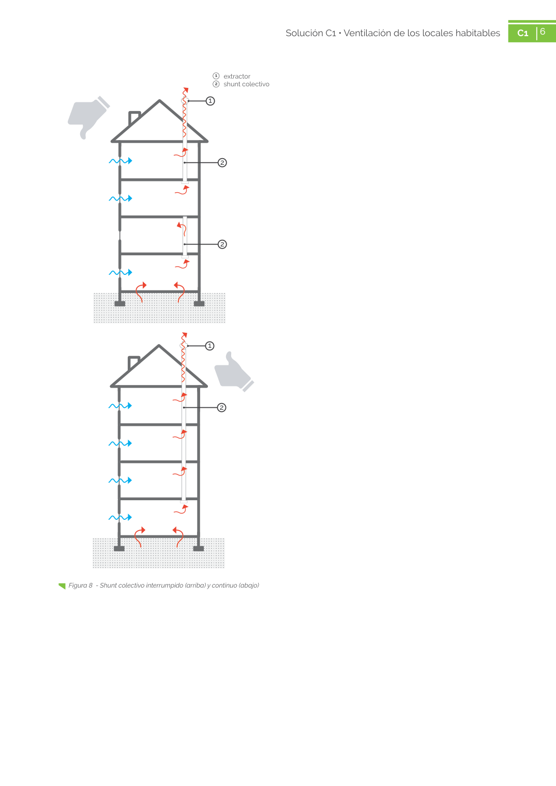

GUIA · Eliminación de los shunts · versión sin-fecha · capa guia
Formatos: JSON compacto · Markdown · PDF fuente
Ámbito del documento · texto del ámbito · documento y tablas
Tipo: tablas, figuras · nivel 3 · sección estimada: 7. COSTE · padre: a0222
Eliminación de los shunts La eliminación o bloqueo de un tramo de shunt colectivo en una vivienda es una acción muy gra ve que supone, por un lado la supresión de la ventilación de las viviendas inferiores (Figura 8) y por otro, una disminución de la ventilación de las viviendas superiores, produciendo un detrimento de su calidad del aire y un aumento de su con centración de radón. Figura 7 - Acumulación de radón a lo largo de una semana en una vivienda con ventilación puntual el primer día Bq/m3 Radón 0 100 200 300 400 500 600 700 800 900 1000 1/8/16 0:12 1/8/16 3:42 1/8/16 7:12 1/8/16 10:42 1/8/16 14:12 1/8/16 17:42 1/8/16 21:12 2/8/16 0:42 2/8/16 4:12 2/8/16 7:42 2/8/16 11:12 2/8/16 14:42 2/8/16 18:12 2/8/16 21:42 3/8/16 1:12 3/8/16 4:42 3/8/16 8:12 3/8/16 11:42 3/8/16 15:12 3/8/16 18:42 3/8/16 22:12 4/8/16 1:42 4/8/16 5:12 4/8/16 8:42 4/8/16 12:12 4/8/16 15:42 4/8/16 19:12 4/8/16 22:42 5/8/16 2:12 5/8/16 5:42 5/8/16 9:12 5/8/16 12:42 5/8/16 16:12 5/8/16 19:42 5/8/16 23:12 6/8/16 2:42 6/8/16 6:12 6/8/16 9:42 6/8/16 13:12 6/8/16 16:42 6/8/16 20:12 6/8/16 23:42 7/8/16 3:12 7/8/16 6:42 7/8/16 10:12 7/8/16 13:42 7/8/16 17:12 7/8/16 20:42 6

PDF fuente redistribuible: copia fiel enlazada en esta página (SHA256 verificado).